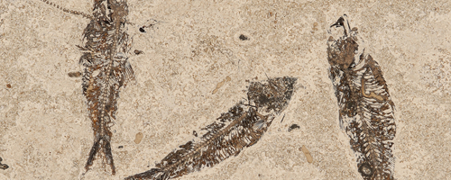

Come facciamo a conoscere così tanti aspetti della vita preistorica? Come facciamo a conoscere quali specie di animali e piante vissero prima che l'uomo ne avesse memoria? E ancora, come facciamo a collocarli nel tempo, visto che parliamo di migliaia o milioni di anni fa? A tutte queste domande è possibile rispondere con una parola: i fossili. Parlando di fossili si intendono tutte le testimonianze e le tracce di vita risalenti ad epoche geologiche passate (per capirci: quando ritroviamo un vecchio orologio appartenuto al nonno, quello non è un fossile, anche se possiamo dire che è appartenuto ad un'epoca passata, quella della giovinezza del nonno appunto. Dicendo “epoche geologiche” ci si riferisce a epoche della Terra comprese tra le migliaia e i milioni di anni fa). Sono fossili, per esempio, i resti dei dinosauri, le ossa di animali preistorici oggi estinti, gli scheletri di Australopiteco, Homo habilis, Homo erectus, ecc.; sono fossili anche le impronte lasciate sul suolo da uomini o animali, le foglie e i tronchi, i piccoli insetti ritrovati nell'ambra, le conchiglie, le piume. Se paragonata al numero enorme di esseri viventi che hanno popolato la Terra, la quantità di fossili che sono stati ritrovati è davvero minima. Questo perché è molto raro che un essere vivente morto si trasformi in fossile, dato che il processo di decomposizione inizia praticamente subito dopo la morte. Occorrono condizioni particolarissime: ad esempio, che il corpo venga immediatamente ricoperto da sabbia, argilla o lava, oppure che venga imprigionato nei ghiacci o nell'ambra. È famoso, ad esempio, il caso dei mammut ritrovati praticamente integri (addirittura con tracce di peli) grazie all'azione immediata del ghiaccio che li circondava. Già, ma come si fa a capire a quale animale appartiene un resto fossile o a ricavare notizie nuove da un ritrovamento? Questo è il compito della paleontologia, una scienza nata nell'Ottocento, che si occupa di studiare la vita e la sua evoluzione nelle epoche passate. Grazie alla tecnologia avanzata che oggi è disponibile, i paleontologi riescono a stabilire in che epoca visse un esemplare, a calcolarne l'età, l'altezza (qualora non sia disponibile tutto lo scheletro), il peso, la forma del corpo, il sesso, il suo modo di camminare, ecc. Inoltre dai fossili è possibile ricavare informazioni sulla storia della Terra. Sappiamo che la vita di certi animali richiede particolari condizioni: gli ippopotami, ad esempio, hanno bisogno di climi caldi, le conchiglie invece vivono in mare. Per esempio: in molte regioni dove oggi non c'è il mare si ritrovano conchiglie. Da questo si deduce che lì, un tempo, c'era il mare. Il ritrovamento di fossili di ippopotami in Europa, invece, fa supporre che in passato qui ci fossero le condizioni adatte per la vita di questo animale.